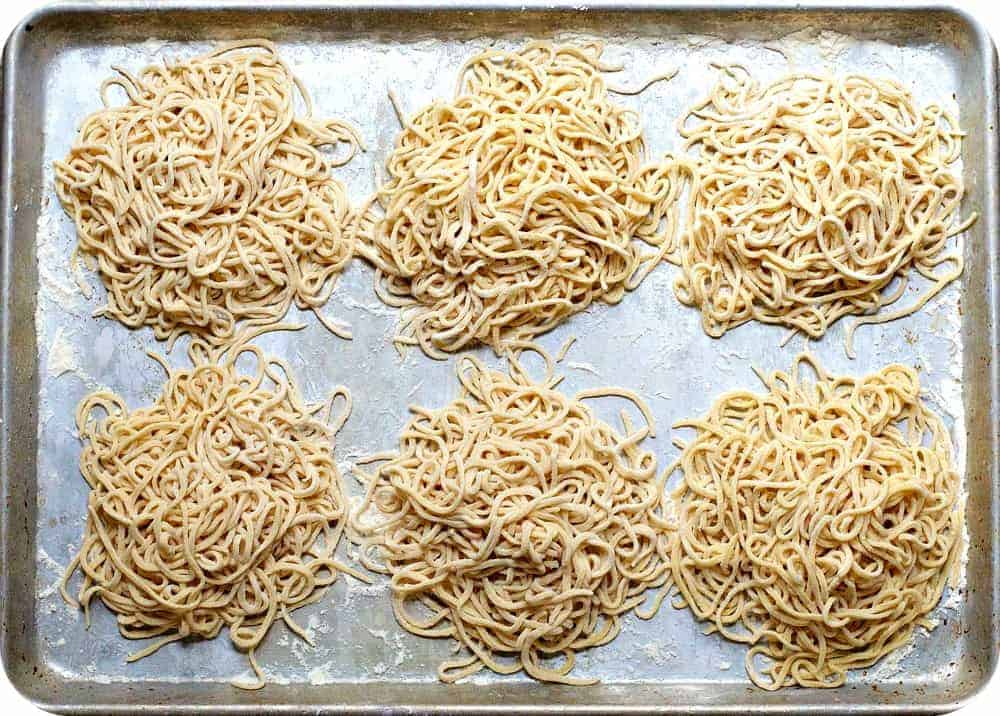

Ramen(Egg) Noodles

Description
This is a recipe to make ramen noodles or egg noodles typically used in thick soup
broth without a pasta machine or anything more than the ingredients and your hands.
The time that it will take to make these noodles is around 1-2 hours, so please plan
accordingly. This recipe is created to serve 1-2 people, but can scaled to serve more
people if need be.
Ingredients
- All Purpose Flour
- Water
- Corn Starch
- Salt
- baking soda
- Egg
Supplies
- Flat Surface
- Cutting Board
- Rolling Pin
- Long Knife
- Sandwich Size ZipLock Bag
- Mixing Bowl
Steps
- Please place the mixing bowl on the flat surface.
- Take 3 cups of the all purpose flour place in the bowl.
- Take a spoonful of both salt and baking soda and mix into flour.
- Take the egg and mix in with a cup of water.
- Mix egg solution into mixing bowl with flour slowly to clump together.
- After mixture is the correct consistenancy, fold and parameterize the dough to be able to fit inside the ziplock bag
- Seal up ziplock bag and place into the fridge to cool down and allow to rise for 45 minutes.
- Take dough out of ziplock bag and place onto a surface prepared with corn starch to prevent sticking.
- Use the Rolling Pin to flatten the dough to a good consistenancy. Then fold 3 times with plenty of corn starch on each fold.
- Place the folded dough on a corn starched cutting board.
- Take the kinfe and thick straight edge to cut in fast strokes
- Take the cut noodles and place them in a cold environment to prevent them from drying out to fast.